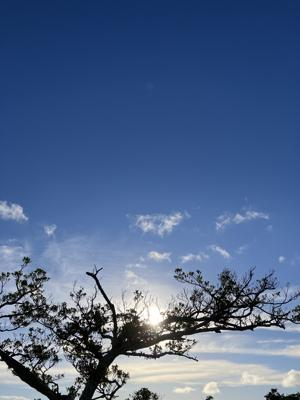
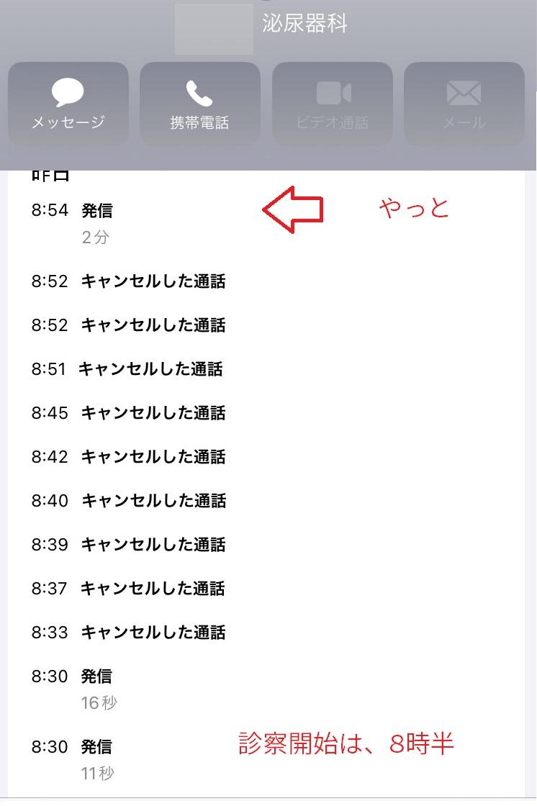

うるがいの話 ある日
最新: 座薬が効かない【うるがいの話 ある日】とは 一日だけのプログです
『うるがいの話』の最新一日だけのプログで、通信料が少なく経済的だ。カニの画像をクリックすると全ての日付が載る『うるがいの話』サイトを表示します
|
|
【うるがいの話】 うるがい(ｳﾙｶﾞｲ urugai)とは、『もずくがに』の名前でとても大きくなります。 |
|---|---|
|
|
【カミマヤーの話】 猫のことを方言でマヤーといいます。カミマヤー（kamimayaa）とは、神の猫のことです。 |
|
【たながぁの音楽】 たながぁ（ﾀﾅｶﾞｰ tanagaa）とは手長えびのことで、何種類かあり大きいのは車 エビぐらいになります。 |

|
【ぶながぁの話】 ぶながぁ(ﾌﾞﾅｶﾞｰ bunagaa)とは、赤い髪の毛、赤い身体、そして身長は１ｍ２０ｃｍ ぐらい、川の蟹を食べているの目撃された。場所は沖縄県国頭郡大宜味村のと ある村僕の隣近所に住んでいる爺さんから、聞いた話です。 |
|
|
【ギーマの話】 ギーマ(giima)とは、山原の里山に咲くスズランに似た、 花を付けます。実は食べられます、 気が付くと口の周りが紫になっています。 |
2024年07月18日 (木）座薬が効かない
16:31

先生、座薬を投入したけど痛みが治まないのですが、なにか別に方法があり
ますか、『・・・・・』、先生にシカとされた。さすがに今回の痛みは辛く
て、高血圧の薬みたいに、尿路結石を予防する薬とかないのですか？。『あ
なたの石は、シュウ酸カリウムが９５％以上、ほかの成分だったらあるので
すが。普通の人は、シュウ酸カリウムを溶かす成分が体の中でできるはずな
のですが、あなたの場合はそれが少ないようです』、フーン。
薬局で、座薬の薬の袋をもらった、みると１日１回と書いてある。え！、薬
剤師に１日１回ですか？、『ええ、そう書いてますね、使いすぎると胃等に
負担がかかります』、ほー、昨日、朝４時から病院へ行くまでの９時前まで
に４つ座薬を投入した！。結論、座薬は効いているがそれを上回る痛みがあ
るということである！、なお、錠剤の痛みなんて全く効かないので、もう利
用していない。
１・昨日の朝４時、痛みで目が覚める。早速、座薬を投入、でもいつものよ
うに痛みは収まらない。そのまま、朝練をする。
２．７時、２回目の座薬を投入、、、しばらくすると便意で排出（効果減）
３．泌尿科に電話で予約する（なかなかとらない）
架電の記録 
車で家をでる前に、３回目の座薬を投入。
４．病院の待合室で待つ、痛くて吐き気もする。
テレビでは、米大リーグのオールスターゲームを放送、でも痛くてテレ
ビはみず、壁をみていた。すると誰かが、入ったと（大谷がホームラン
）と呟いていた。
５．１２時３０分診察、清算を終え薬局で、処方薬をまつ。少し、痛みが治
まっている。
６．１５時半もともと通院予定の内科へ、問診のあいだも痛みは続いている
７．１７時すぎ、清算を終え薬局へ行く。ウン？、痛みかなり治まっている
若い男性の薬剤師が薬をわたすときに、何か変わったことありますか？
と言われたので、いま、尿路結石になっています、痛いっすヨと答えた
８．１８時前、ジョギング前のションベン、これまでと違って勢いがある！
排石（４ミリ）の瞬間だった。
内科では、いつもの先生ではなくイケメン君の先生（３０代以下）が対応。
座薬は何度も利用できないのですね？、と『そうですね、胃などに負担があ
るそうです』と同じような回答、でも座薬以外に痛みに効く薬ありますか？
『ないようですネ』、ホー、では座薬投入した後の痛みは、我慢しかないと
いうことですね。予防は、水分を取ること！と皆さん同じ事を言う、分かっ
てはいるが・・・・、でもそろそろ真剣に。夜から、痛みから解放されハピ
ー！。
１６時２４分 ビットコインの総資産 ￥２９、３５７（↓３２）